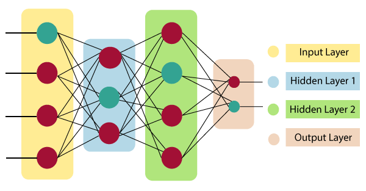
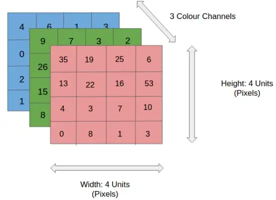
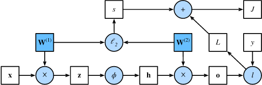

Neural Networks
Neural networks are a subset of machine learning and are at the heart of deep learning algorithms. Their name and structure are inspired by the human brain, mimicking the way that biological neurons signal to one another.
Neural networks are comprised of a node layers, containing an input layer, one or more hidden layers, and an output layer. Each node, or artificial neuron, connects to another and has an associated weight and threshold. If the output of any individual node is above the specified threshold value, that node is activated, sending data to the next layer of the network. Otherwise, no data is passed along to the next layer of the network.
Neural network is a technique for building a computer program that learns from data. It is based very loosely on how we think the human brain works. First, a collection of software “neurons” are created and connected together, allowing them to send messages to each other. Next, the network is asked to solve a problem, which it attempts to do over and over, each time strengthening the connections that lead to success and diminishing those that lead to failure.
Architecture of Artificial Neural Network
Artificial Neural Network primarily consists of three layers:

Input Layer:
As the name suggests, it accepts inputs in several different formats provided by the programmer.
Hidden Layer:
The hidden layer presents in-between input and output layers. It performs all the calculations to find hidden features and patterns.
Output Layer:
The input goes through a series of transformations using the hidden layer, which finally results in output that is conveyed using this layer.
What is CNN?
CNN or the convolutional neural network (CNN) is a class of deep learning neural networks. In short think of CNN as a machine learning algorithm that can take in an input image, assign importance (learnable weights and biases) to various aspects/objects in the image, and be able to differentiate one from the other.
What does CNN consist of?
- The input layer which is a grayscale image
- The Output layer which is a binary or multi-class labels
- Hidden layers consisting of convolution layers, ReLU (rectified linear unit) layers, the pooling layers, and a fully connected Neural Network
Understanding CNN
Let's consider that we have access to multiple images of different vehicles, each labeled into a truck, car, van, bicycle, etc. Now the idea is to take these pre-label/classified images and develop a machine learning algorithm that is capable of accepting a new vehicle image and classify it into its correct category or label. Now before we start building a neural network we need to understand that most of the images are converted into a grayscale form before they are processed.
Image Processing
Image processing is the process of segmenting images into different categories based on their features. A feature could be the edges in an image, the pixel intensity, the change in pixel values, and many more.
The biggest challenge when working with images is the uncertainty of these features. To the human eye, it looks all the same, however, when converted to data you may not find a specific pattern across these images easily.
An image consists of the smallest indivisible segments called pixels and every pixel has a strength often known as the pixel intensity. Whenever we study a digital image, it usually comes with three color channels, i.e. the Red-Green-Blue channels, popularly known as the “RGB” values. Why RGB? Because it has been seen that a combination of these three can produce all possible color pallets. Whenever we work with a color image, the image is made up of multiple pixels with every pixel consisting of three different values for the RGB channels.
What is grayscale and why it is used?
We discussed earlier that any color image has three channels, i.e. red, green, and blue as shown in Figure 3. There are several such color spaces like the grayscale, CMYK, HSV in which an image can exist.
The challenge with images having multiple color channels is that we have huge volumes of data to work with which makes the process computationally intensive. In other worlds think of it like a complicated process where the Neural Network or any machine learning algorithm has to work with three different data (R-G-B values in this case) to extract features of the images and classify them into their appropriate categories.
The role of CNN is to reduce the images into a form that is easier to process, without losing features critical towards a good prediction. This is important when we need to make the algorithm scalable to massive datasets.
Forward propagation
Forward propagation (or forward pass) refers to the calculation and storage of intermediate variables (including outputs) for a neural network in order from the input layer to the output layer. As the name suggests, the input data is fed in the forward direction through the network. Each hidden layer accepts the input data, processes it as per the activation function and passes to the successive layer.
Why feed-forward network?
In order to generate some output, the input data should be fed in the forward direction only. The data should not flow in reverse direction during output generation otherwise it would form a cycle and the output could never be generated. Such network configurations are known as feed-forward network. The feed-forward network helps in forward propagation.
Computational graph of forward propagation
Plotting computational graphs helps us visualize the dependencies of operators and variables within the calculation. Figure below contains the graph associated with the simple network described above, where squares denote variables and circles denote operators. The lower-left corner signifies the input and the upper-right corner is the output. Notice that the directions of the arrows (which illustrate data flow) are primarily rightward and upward.
Backpropagation
Backpropagation refers to the method of calculating the gradient of neural network parameters. In short, the method traverses the network in reverse order, from the output to the input layer, according to the chain rule from calculus. The algorithm stores any intermediate variables (partial derivatives) required while calculating the gradient with respect to some parameters.
Why is backpropagation used?
In fitting a neural network, backpropagation computes the gradient of the loss function with respect to the weights of the network for a single input-output example, and does so efficiently, unlike a naive direct computation of the gradient with respect to each weight individually. This efficiency makes it possible to use gradient methods for training multilayer networks, updating weights to minimize loss; gradient descent, or variants such as stochastic gradient descent, are commonly used. The backpropagation algorithm works by computing the gradient of the loss function with respect to each weight by the chain rule, computing the gradient one layer at a time, iterating backward from the last layer to avoid redundant calculations of intermediate terms in the chain rule; this is an example of dynamic propagation.
TensorFlow
Tensorflow is a library/platform created by and open-sourced by Google. It is the most used library for deep learning applications. Now, creating a neural network might not be the primary function of the TensorFlow library but it is used quite frequently for this purpose. It was designed to work on multiple CPUs or GPUs, as well as mobile operating systems in some circumstances, and it includes wrappers in Python, C++, and Java.
TensorFlow provides stable Python and C++ APIs, as well as non-guaranteed backward compatible API for other languages.